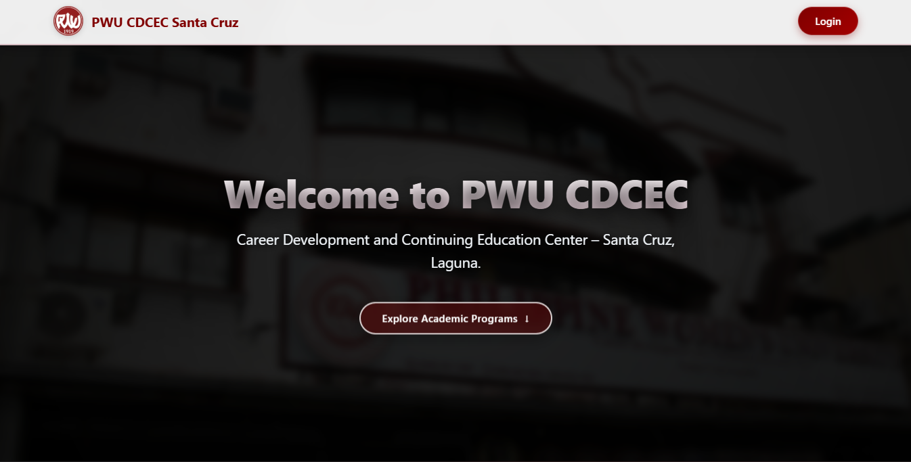
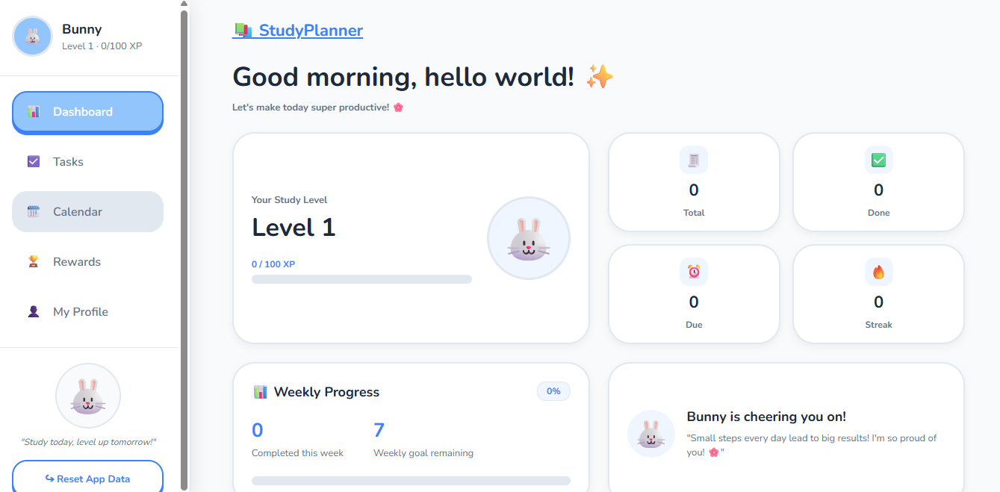

PWUpdate
Acceptability of a web-based classroom announcement management system for the Grade 11 TechPro of PWU CDCEC, Santa Cruz, Laguna
Visit websiteICT Student Showcase
Explore website projects created by ICT students. Each project is a chance to learn, experiment, and share something with the community.
Student projects
Browse each group’s website and see what they have created.

Acceptability of a web-based classroom announcement management system for the Grade 11 TechPro of PWU CDCEC, Santa Cruz, Laguna
Visit website
Design, Development, and Evaluation of a Web-Based Study Planner for Improving Time Management of Senior High School Students
Visit websiteDevelopment of a tourism information website for tourist access to local attractions in Santa Cruz, Laguna
Visit website